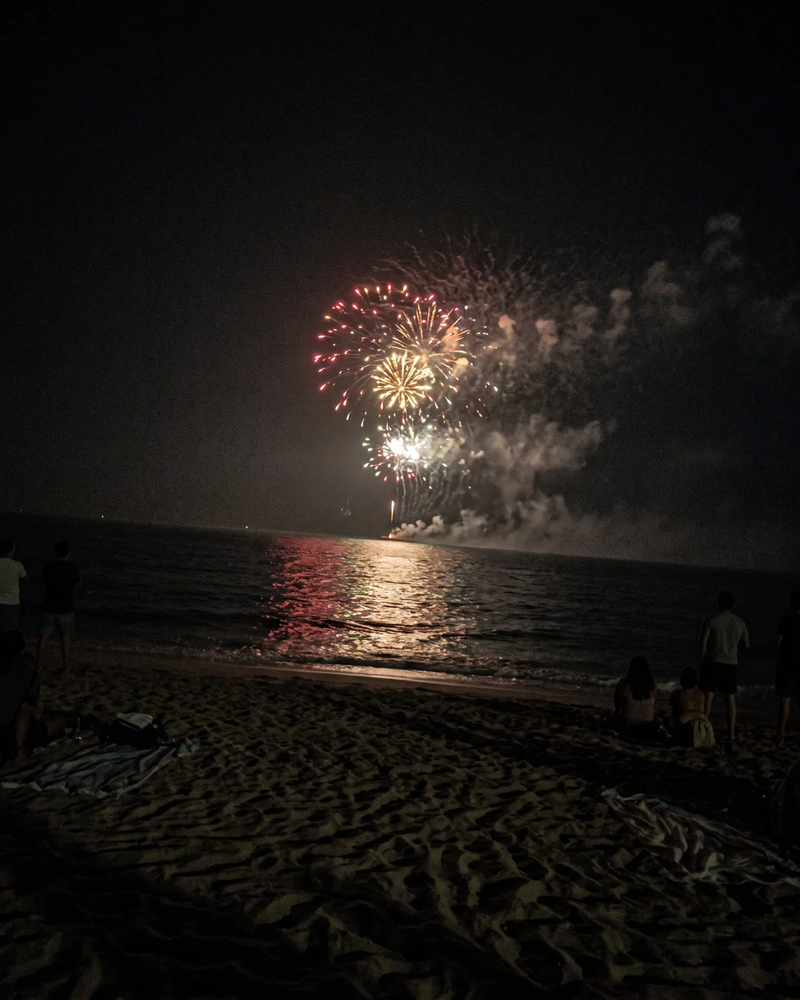
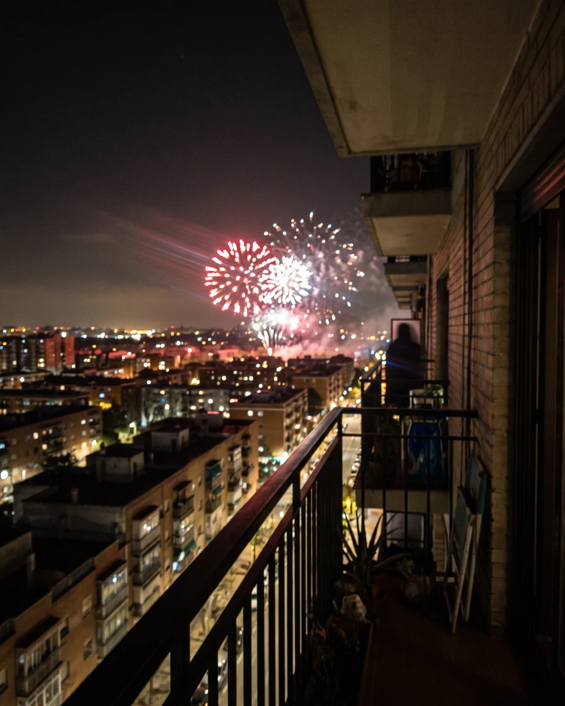
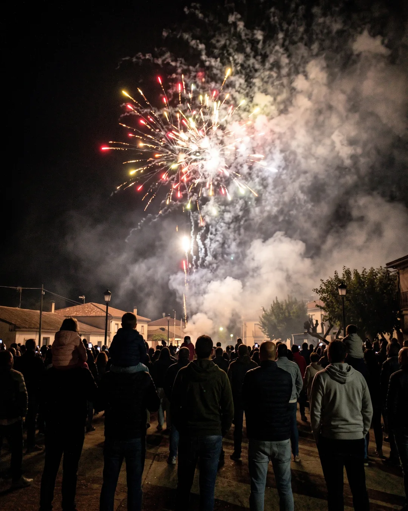
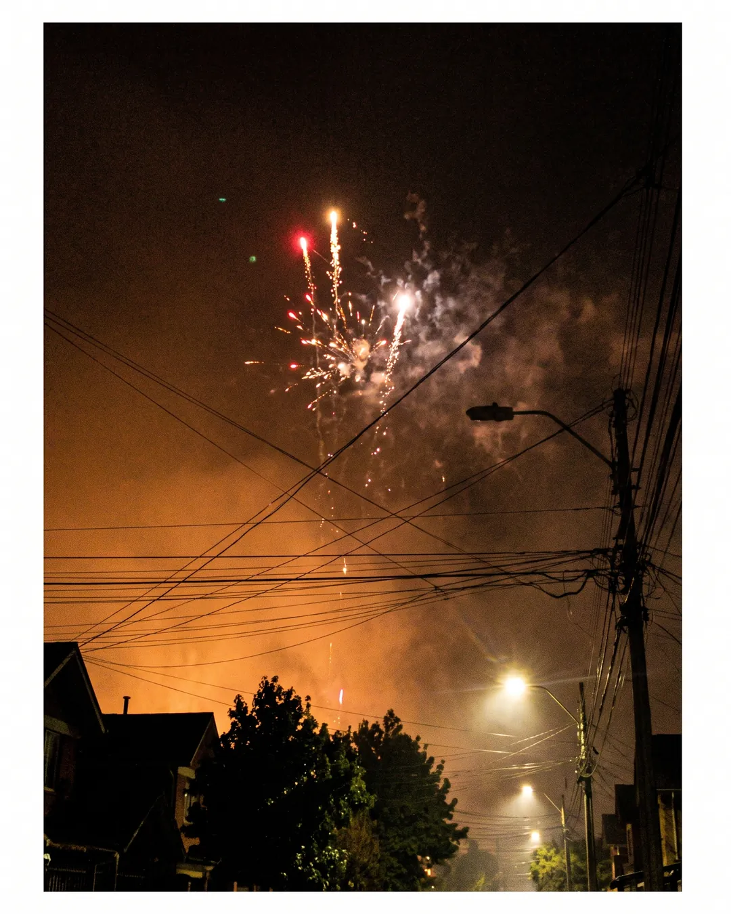

Case #1 · Fireworks
About this case
Case #1 is closed. It was the daily case for November 1, 2026 and its theme was Fireworks. The detectives of that day had two challenges: five images to judge as real photographs or AI-made pictures, and five one-sentence claims to judge as facts or fakes.
- AI-generated images: 4 of 5
- Fake claims: 2 of 5
Below you will find every answer. Each AI-generated image comes with the prompt that produced it, and each claim with the truth behind it and the details worth remembering, so you can check what you missed.
One of the fakes: “The biggest fireworks show in history launched more than a million fireworks.” The truth: The Guinness record is 840,537 fireworks, launched in Washington, D.C., on July 4, 2026.
Want to sharpen your eye? Read our guide to spotting AI images or our guide to spotting fake news, then play today's case.
Images
-
Image 1

AI
The suspect's confession
Fireworks over the sea, reflected in the water, seen from the sand on a beach; dark, very grainy photo.
-
Image 2

AI
The suspect's confession
Fireworks over a city at night seen from a balcony, with the railing and part of a building in the foreground; slightly blurry.
-
Image 3

REAL
Real photograph
-
Image 4

AI
The suspect's confession
Fireworks at a small-town festival, with silhouettes of people seen from behind looking up at the sky and smoke built up between the bursts.
-
Image 5

AI
The suspect's confession
A fireworks barrage just getting started, with streetlights and power lines crossing the frame and the sky a bit orange from light pollution.
Fact or Fake
-
Claim 1
FACT “The biggest single firework in history weighed more than 1,000 kg (2,205 lb).”
It weighed 1,268 kg (2,795 lb) and was launched in Colorado, USA, in February 2020.
- It was launched at the Steamboat Springs Winter Carnival.
-
Claim 2
FACT “Fireworks were created by accident while people were searching for immortality.”
Chinese alchemists discovered gunpowder over 1,000 years ago, around the 9th century, seeking an elixir of immortality.
- They mixed charcoal, sulfur and saltpeter.
- The result was an explosive mixture.
-
Claim 3
FAKE “The biggest fireworks show in history launched more than a million fireworks.”
The Guinness record is 840,537 fireworks, launched in Washington, D.C., on July 4, 2026.
- It marked the 250th anniversary of U.S. independence.
- It lasted about 40 minutes.
-
Claim 4
FAKE “Green fireworks get their color from copper.”
Green comes from barium compounds, while copper is used for blue.
- Blue is one of the hardest colors to achieve.
-
Claim 5
FACT “Fireworks can be seen from space.”
Fireworks over big cities have been photographed from the International Space Station.
- From there they look like tiny flashes.
- They are very hard to make out with the naked eye.